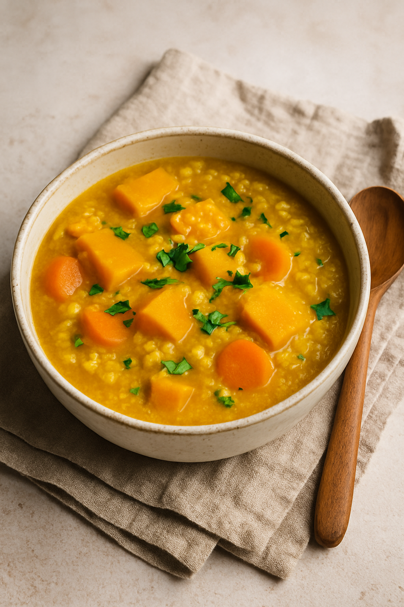
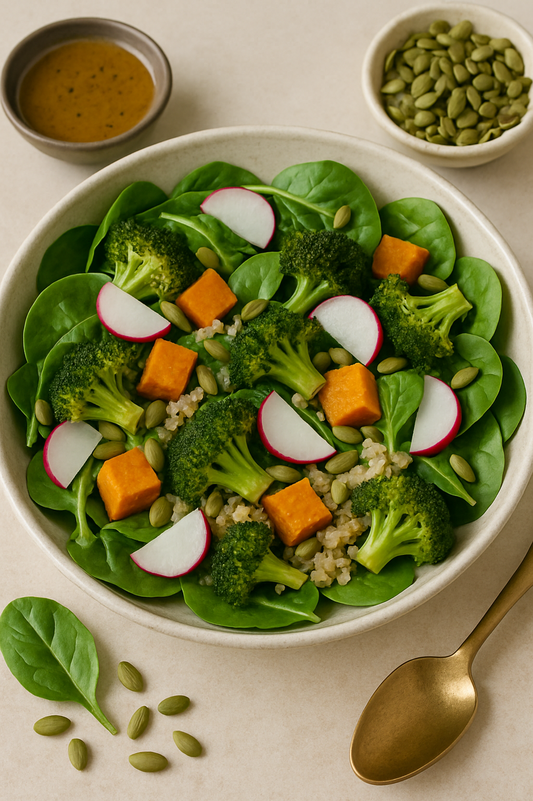
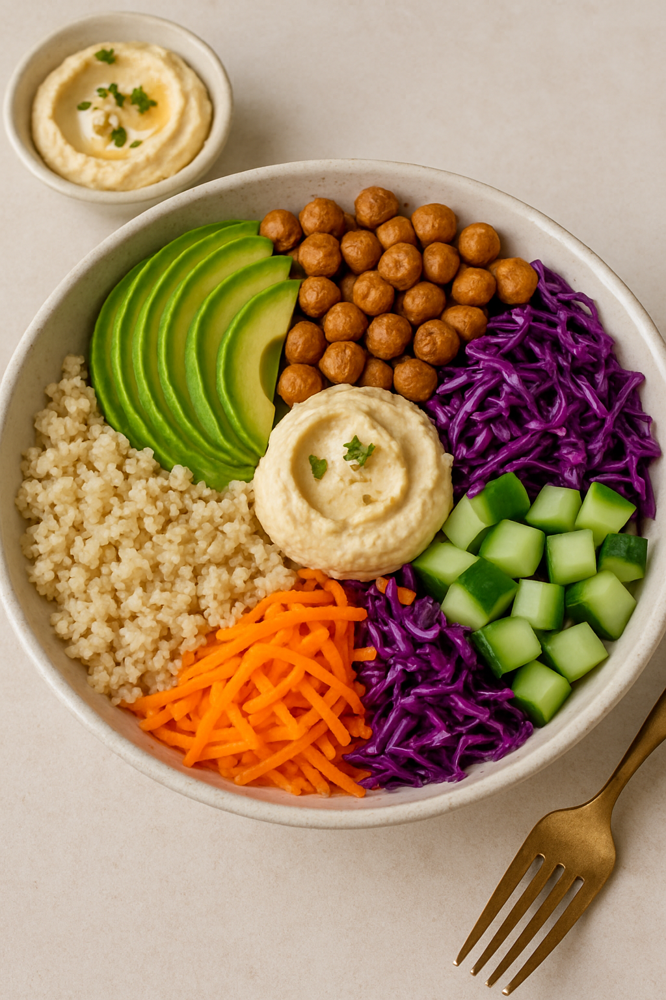

In today’s fast-paced world, stress can silently build up and manifest in both the body and the mind. Dinner, often the final meal of the day, offers an important opportunity to nourish ourselves and unwind. But not just any meal will do. Meals heavy with stimulants like garlic or onion may intensify restlessness or disturb digestion, especially for those on a spiritual or mindful journey.
That’s why we’ve crafted five peaceful, plant-based dinner recipes that are completely free from the five pungent spices — a tradition rooted in both Ayurvedic and spiritual dietary practices. Each recipe in this list aims to calm your nervous system, support gut health, and bring a quiet kind of joy to your evening.
🥘 Recipe 1: Creamy Pumpkin Millet Stew
Benefit: Magnesium-rich pumpkin calms the nervous system; millet is light and grounding.
Servings: 2
- 1 cup millet (pre-soaked for 4 hours)
- 1.5 cups pumpkin (peeled, diced)
- 1/2 cup carrots, sliced
- 1 tbsp olive oil
- 1/4 tsp turmeric
- 1/4 tsp cumin powder
- Salt to taste
- 2.5 cups water
- Heat olive oil in a pot, add turmeric and cumin.
- Add pumpkin and carrot. Sauté 3 minutes.
- Add millet and water, bring to boil.
- Simmer for 20–25 minutes until soft.
- Add salt, serve warm with fresh coriander.

🥗 Recipe 2: Quinoa & Steamed Greens with Tahini Dressing
Benefit: Quinoa provides protein and tryptophan; greens like bok choy aid liver detox.
- 1 cup cooked quinoa
- 1 cup bok choy, lightly steamed
- 1/2 cup broccoli florets
- 1 tbsp tahini
- 1 tbsp lemon juice
- 1 tsp maple syrup
- Salt & pepper to taste
- Arrange quinoa and greens in a bowl.
- Mix tahini, lemon, maple syrup, and salt.
- Drizzle dressing over bowl. Serve.
🍲 Recipe 3: Lentil Coconut Soup with Calming Herbs
Benefit: Lentils balance blood sugar; coconut milk soothes the gut; ashwagandha or tulsi supports stress relief.
- 1/2 cup yellow lentils
- 2 cups water
- 1/2 cup coconut milk
- 1/4 tsp ground coriander
- 1/4 tsp dried tulsi or 1/4 tsp ashwagandha powder
- Pinch of Himalayan salt
- Rinse and boil lentils until soft.
- Add coconut milk, herbs, and salt.
- Simmer for 10 minutes. Serve warm.

🍚 Recipe 4: Sweet Potato & Brown Rice Buddha Bowl
Benefit: Complex carbs promote serotonin; sesame oil nourishes the skin and gut lining.
- 1 cup cooked brown rice
- 1 cup steamed sweet potatoes, cubed
- 1/2 avocado, sliced
- 1 tsp toasted sesame oil
- Sesame seeds and microgreens for garnish
- Layer brown rice, sweet potato, and avocado in a bowl.
- Drizzle sesame oil.
- Top with seeds and greens. Serve.

🍝 Recipe 5: Zucchini Noodles with Cashew Basil Cream
Benefit: Light digestion for evening; cashews provide calming magnesium.
- 2 zucchinis, spiralized
- 1/4 cup raw cashews (soaked)
- 1/4 cup water
- 5–6 basil leaves
- 1 tbsp nutritional yeast
- Salt to taste
- Blend cashews, basil, water, yeast, and salt into cream.
- Toss with zucchini noodles.
- Let sit 5 mins before serving to soften noodles.
🧘♀️ Conclusion
Your dinner should be more than just fuel — it can be a ritual of restoration. These five gentle, garlic-free and onion-free recipes are designed to help you slow down, reconnect, and nourish yourself deeply. By aligning what you eat with how you want to feel, you begin to bring peace not only to your body, but also to your spirit.